前言
Hi Coder，我是 CoderStar！
iOS 工具
JSONConverter
JSONConverter 是 MAC 上 iOS/Flutter 开发的辅助工具，可以快速的格式化 JSON 数据并转换生成对应的模型类属性，目前支持 Objective-C、Swift、Flutter 以及目前流行的第三方库：SwiftyJSON、HandyJSON，ObjectMapper, 可以灵活选择构建 class/struct，并支持配置类名前缀等，省去手敲模型的麻烦，借此提高开发效率。
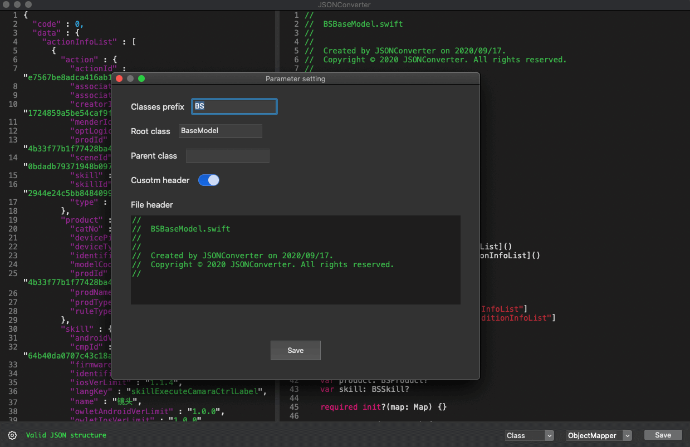
LSUnusedResources
用于在 Xcode 项目中查找未使用的图像和资源。
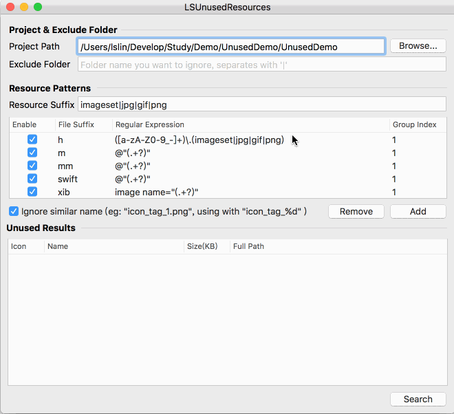
BuildTimeAnalyzer
展示 Swift 编译构建时间。
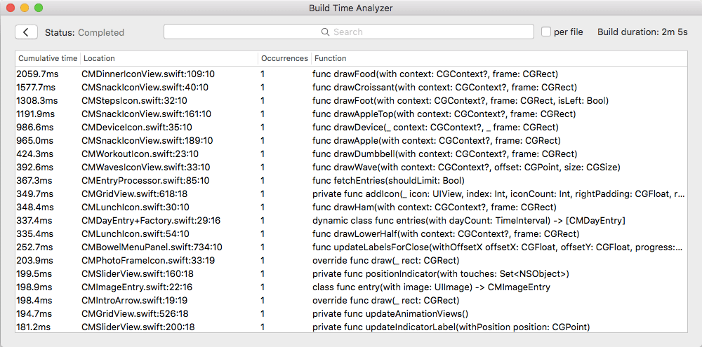
ImageOptim
图片压缩工具
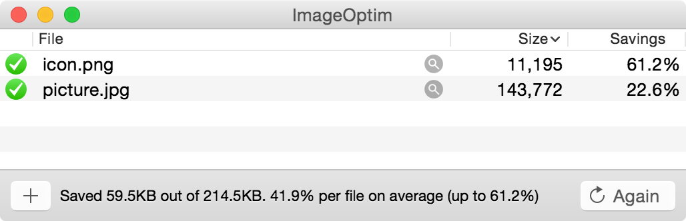
ImageOptim-CLI：Mac 可使用
brew install imageoptim-cli安装，其会根据你的指定，选择性调用 JPEGmini、ImageAlpha、ImageOptim 等工具，实现中间过程自动化。
iSpart
iSparta 是一款 APNG 和 Webp 转换工具。
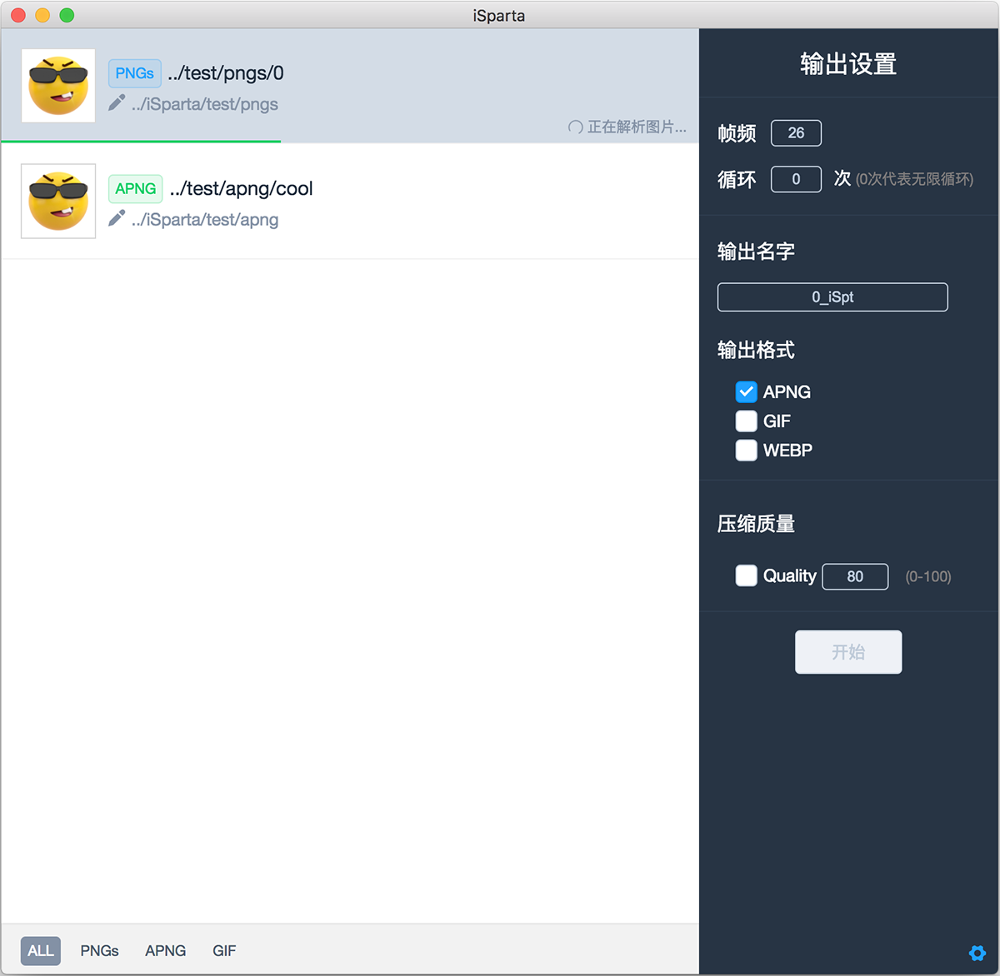
- webp工具: 在Mac下，可以使用Homebrew安装WebP工具—
brew install webp；
Lookin
Lookin 可以查看与修改 iOS App 里的 UI 对象，类似于 Xcode 自带的 UI Inspector 工具，或另一款叫做 Reveal 的软件。但借助于’控制台’和’方法监听’功能，Lookin 还可以进行 UI 之外的调试。此外，虽然 Lookin 主体是一款 macOS 程序，它亦可嵌入你的 iOS App 而单独运行在 iPhone 或 iPad 上。最后，Lookin 完全免费。
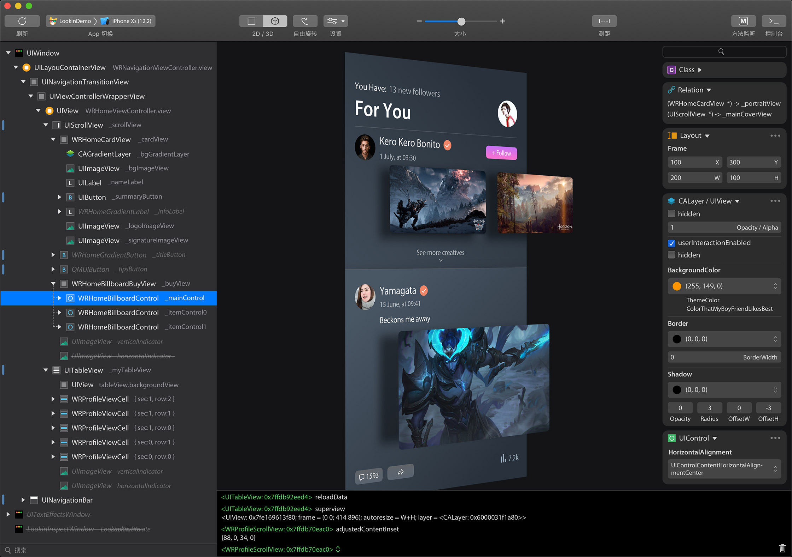
LinkMap
这个工具是专为用来分析项目的 LinkMap 文件，得出每个类或者库所占用的空间大小（代码段 + 数据段），方便开发者快速定位需要优化的类或静态库。
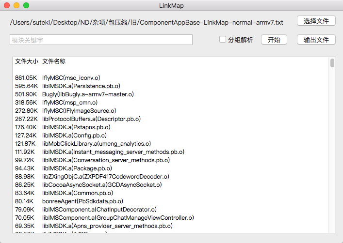
SwiftFormat For Xcode
SwiftFormat 是一个代码库和命令行工具，用于在 macOS 或 Linux 上重新格式化 Swift 代码。
Hopper
逆向工程工具，可让您反汇编、反编译和调试应用程序。
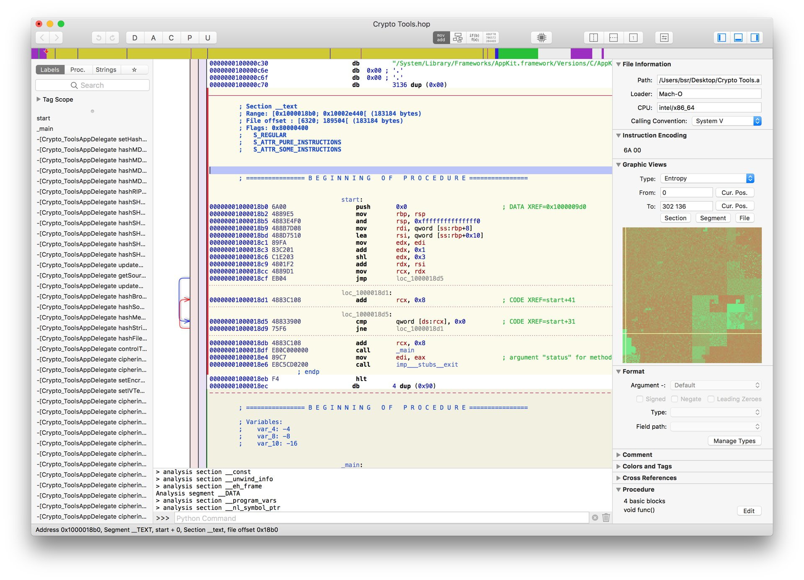
iTools
这个只要是做 iOS 开发的应该都知道，我就不过多介绍了。
Network Link Conditioner
这是一个来自苹果官方的工具，它可以模拟任何网络环境，如 3G，Edge 等等，也可以重新定义当前的网络环境，如网络延迟、带宽或丢包率。

XSimulatorMngr
XCode 模拟器管理器，用于管理 iOS 模拟器的开发者工具。
- 已安装的模拟器列表。
- 每个模拟器已安装的开发者应用程序列表。
- 允许直接打开应用程序包或沙箱文件夹。
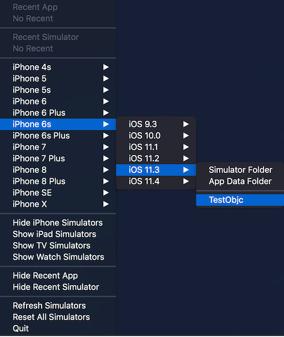
Knuff
Apple 推送通知服务 (APN) 的调试应用程序
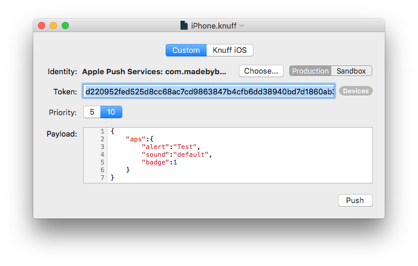
InjectionIII
允许您在 iOS 模拟器中增量更新函数和类、结构或枚举的任何方法的实现，而无需重新构建或重新启动应用程序。
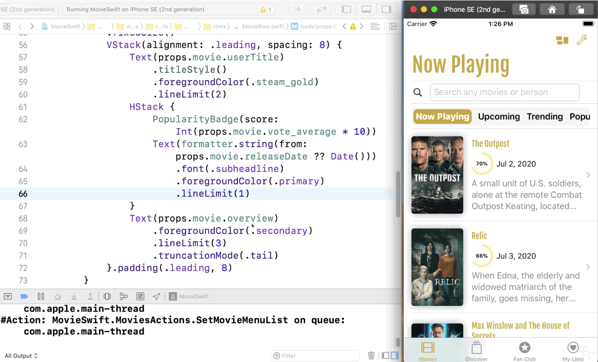
DoKit
滴滴推出的 APP 效率工具
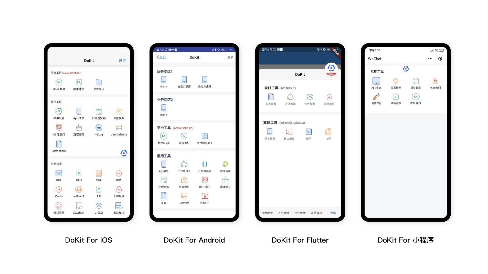
ProfilesManager
mobileprovision 文件管理器工具
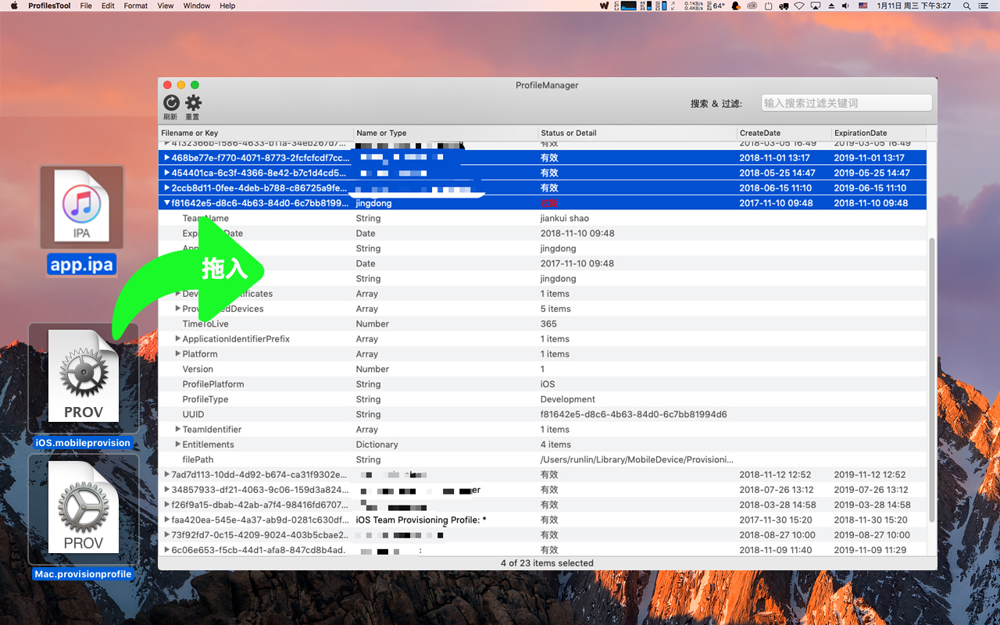
AssetCatalogTinkerer
一个应用程序，可让您打开。car 文件并浏览 / 提取其图像，或使用 QuickLook 在 Finder 上预览它们
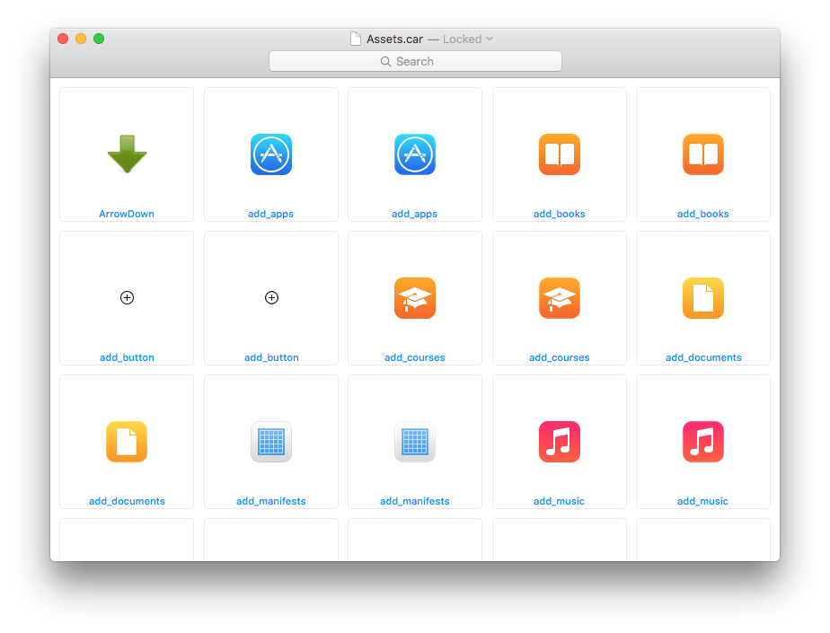
cocoapods 依赖关系可视化
安装cocoapods-dependencies工具，在Podfile文件路径下执行pod dependencies在控制台就会输出级联的依赖关系。
安装cocoapods-dependencies： gem install cocoapods-dependencies
这样的方式输出的依赖关系不直观，我们可以安装graphviz工具将这些依赖关系生成为.gz文件，并且也可以生成依赖图；
- 安装
graphviz：brew install graphviz - 生成
.gz文件：pod dependencies --graphviz - 生成依赖图：
pod dependencies --image - 生成
.gz文件及依赖图：pod dependencies --graphviz --image
.gz文件其实就是一种描述图形的文件，我们可以通过其他的工具去解析它，比如：
- 在线网站：GraphvizOnline
- vs 插件：Graphviz (dot) language support for Visual Studio Code
其他工具
- FengNiao：找出未使用的图片资源，命令行工具，可嵌入到Run Script中或者在CI系统中使用，支持的模式匹配更加强大；
- Duplicate Photos：从内容上检测重复/相似图片；
- fdupes：检测项目中的重复文件，其原理是对比不同文件的签名，签名相同的文件就会判定为重复资源；
- fui：查找未import的.h文件；
- dSYMTools：分析Crash
最后
要更加努力呀！
Let’s be CoderStar!